The GI tract & normal stool
How stool is made, what normal looks like, and how to assess the abdomen.
How stool is made
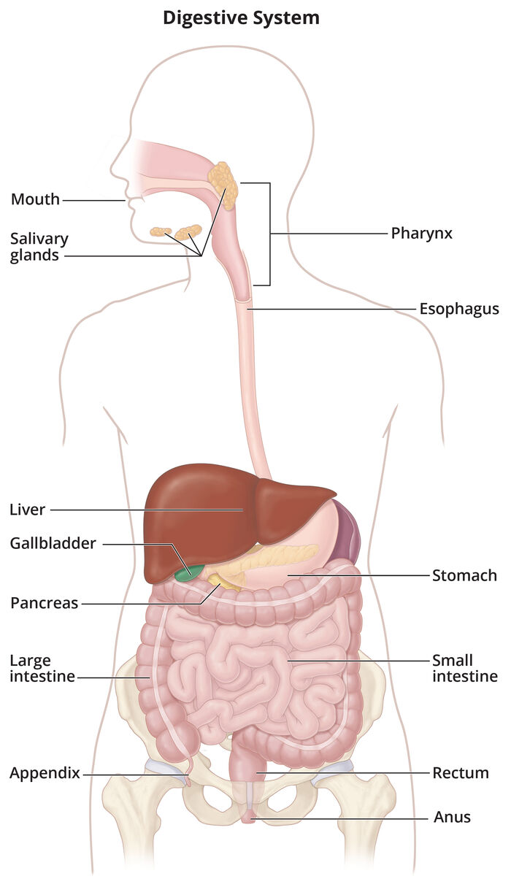
- The epiglottis covers the airway when you swallow so food goes into the esophagus.
- Peristalsis starts in the esophagus and pushes food along the whole tract.
- Stomach: food mixes with digestive secretions, then empties slowly into the small intestine.
- Small intestine: the pancreas, liver and gallbladder add enzymes; most nutrients are absorbed here into the bloodstream.
- Large intestine: water is absorbed and stool forms from unused food, liquid and GI cells. Bacteria here make vitamin K (clotting and strong bones). The rectum stores stool until a bowel movement.
- Like urine, the amount of stool depends on how much a person eats and drinks. Frequency varies (several a day to every other day), but stool should be soft and formed.
Assessing bowel elimination
Stool characteristics to assess: volume, color, odor, consistency and shape.
Abdominal exam order: inspect → auscultate → percuss → palpate. Listen before you touch, because touching can change bowel sounds.
| Bowel sounds | Per minute |
|---|---|
| Hypoactive | Fewer than 5 |
| Normoactive | 5–35 |
| Hyperactive | More than 35 |
| Absent | No sounds after listening a total of 5 minutes |
The slide swaps these two (it lists hyperactive as <5 and hypoactive as >35). This guide uses the standard values, the same ones in the Unit 3 assessment guide: fewer than 5 is hypoactive, more than 35 is hyperactive.
Hypo is low, hyper is high. Fewer than 5 is a quiet (hypo) belly; more than 35 is a busy (hyper) one.
Bristol Stool Chart
| Types | Looks like | Means |
|---|---|---|
| 1–2 | Hard lumps; lumpy sausage | Constipation |
| 3–4 | Sausage with cracks; smooth, soft sausage | Expected (ideal) |
| 5–7 | Soft blobs; mushy; watery | Diarrhea |
What affects bowel elimination
The slides list diet, age, medications, physical activity and psychological factors (plus constipation and diarrhea themselves), and as risk factors age, mobility/motility, psychological stress (lack of privacy) and medications.
| Factor | Effect |
|---|---|
| Older adults | Slower peristalsis, weaker bowel muscle tone, relaxed sphincters; inactivity, less fluid and fiber, and medications such as some antihypertensives and antacids lead to constipation |
| Diet | Fiber 22–34 g/day. Gas: cabbage, cauliflower, apples. Laxative effect: dried fruit, high-fiber vegetables. Constipating: cheese, processed meats, refined carbohydrates, high-fat foods. Gluten or dairy intolerance can cause watery stools. |
| Fluids | About 2.7 L/day for females and 3.7 L/day for males (food and drink) |
| Activity | Stimulates intestinal activity; immobility makes defecation harder |
| Psychological | Stress speeds peristalsis (diarrhea, worse colitis or IBS); depression slows it (constipation) |
| Personal habits | Avoiding public toilets, believing a daily movement is required, no privacy in the hospital |
| Position | Squatting relaxes the puborectalis muscle so stool passes easily |
| Pain | Hemorrhoids or fissures make clients hold back; opioids cause constipation |
| Pregnancy | Less intestinal space, slower peristalsis, straining → hemorrhoids |
| Surgery and anesthesia | Bowel slows temporarily; risk of paralytic ileus. Listen for bowel sounds before advancing the diet. |
Quick check
Where is water absorbed so stool can form?
The large intestine.
You count 3 bowel sounds a minute. How do you document it?
Hypoactive (fewer than 5 a minute).
Which Bristol types are ideal?
Types 3 and 4.
Why listen before you palpate?
Touching or pressing on the abdomen can change bowel sounds.
Constipation, diarrhea & incontinence
Causes, complications, and what the nurse does.
Constipation vs diarrhea
Constipation
- Fewer than 3 bowel movements a week; hard, dry, hard to pass
- Causes: low fiber, dehydration, frequent laxatives, older age, immobility, sedentary lifestyle, pregnancy, medications
- Signs: bloating, cramping, straining, hard stool, fewer movements than usual
Diarrhea
- Frequent loose or watery stools, usually 3 or more in 24 hours
- May include cramping, nausea and bloating; risk for dehydration
- Causes: viral or bacterial gastroenteritis, antibiotics, inflammatory bowel disease, IBS (irritable bowel syndrome), contaminated food or water, lactose
- Acute 14 days or fewer · persistent 2–4 weeks · chronic over 4 weeks
Medications
Cause constipation
- Opioids
- Oral iron
- Aluminum and calcium antacids
- Anticholinergics and antispasmodics
- Calcium channel blockers
- Diuretics, antiseizure drugs, some antidepressants, antipsychotics, bile acid sequestrants
Cause diarrhea
- Systemic antibiotics (disturb gut bacteria; test for C. difficile if watery stools 3+ times a day after antibiotics)
- Magnesium antacids and laxatives (pull water into the bowel)
Complications
Constipation
- Fecal impaction: hard stool wedged in the rectum; liquid stool may leak around it
- Hemorrhoids and rectal fissures from straining
- Bradycardia, hypotension, syncope from straining (Valsalva)
Diarrhea
- Fluid and electrolyte disturbances: dehydration, hypokalemia (leg cramps, weakness, dysrhythmias), metabolic acidosis (bicarbonate loss)
- Skin breakdown around the anus
Digital removal of an impaction: left side with knees flexed, gloved lubricated finger, break stool up and remove it in small pieces, let the client rest. Stop if the heart rate drops or the rhythm changes: rectal stimulation can trigger the vagus nerve.
Nursing care
Constipation
- Fiber and water first (unless contraindicated), then activity
- Bulk-forming products before stool softeners, stimulants or suppositories
- Enemas are a last resort
- Walk 15–20 min a day; in bed or a chair: pelvic tilts, single leg lifts, lower trunk rotation
Diarrhea
- Find and treat the cause; watch for dehydration; measure stool volume
- Perineal care after each stool plus a moisture barrier
- Fluids; easy-to-digest, low-fiber foods; yogurt once it stops
- Avoid caffeine, alcohol, raw fruit with skin, dairy, greasy and spicy foods, sorbitol
- No loperamide if there's blood in the stool or high fever
- Increase fiber and fluids
- Bulk-forming product
- Stool softener, stimulant or suppository
- Enema (last resort)
Adults with diarrhea need follow-up for: fever 39° C (102.2° F) or higher, diarrhea longer than 2 days or 6+ stools a day, severe abdominal pain, black or bloody stool, vomiting that blocks drinking, a weak immune system, or signs of dehydration.
Older adults are prone to constipation and impaction, and they can't make up for fluid lost to diarrhea as well, so watch for dehydration, electrolyte imbalance and skin breakdown.
Bowel incontinence, gas & hemorrhoids
Bowel (fecal) incontinence, also called accidental bowel leakage, is loss of control over stool or gas. Causes include diarrhea, impaction with liquid stool leaking around it, nerve damage (stroke, spinal cord injury, diabetes), weak sphincter muscles (childbirth, aging) and dementia. It raises the risk of skin breakdown, falls (rushing to the toilet) and embarrassment.
| Problem | What it is | Nursing care |
|---|---|---|
| Urge incontinence | Feels the urge but can't reach the toilet in time | Find the cause (medications, infection, impaction); perineal care after each stool and a moisture barrier; the provider may order a fecal pouch or bowel management system |
| Passive incontinence | Leaks stool without being aware of it | |
| Flatulence | Gas distends the bowel: cramping, fullness | Eat slowly, avoid gas-forming foods, walk regularly |
| Hemorrhoids | Engorged rectal veins from straining, pregnancy, liver disease, heart failure: itching, pain, bleeding | Moist wipes, prescribed ointment, sitz bath or ice pack, high fiber and fluids, no straining or long sitting |
Skin care for incontinent clients
- Clean after every episode with mild soap and water or a soap-free perineal cleanser; pat dry
- Alcohol-free moisturizer, then a barrier (zinc oxide, petrolatum, lanolin or a sealant), reapplied every time, even with briefs
- Inspect the buttocks, hips, genitals and perineum often for redness that doesn't blanch, blisters or open areas
- No alcohol-based products; reposition and change linens promptly
Quick check
A constipated client has liquid stool leaking. What do you suspect?
Fecal impaction.
The heart rate drops during disimpaction. What do you do?
Stop the procedure (vagal stimulation).
Leg cramps and weakness after days of diarrhea suggest which imbalance?
Hypokalemia.
What's the last resort for constipation?
An enema.
Conditions that alter bowel elimination
The six conditions on the slides.
At a glance
| Condition | Key findings | Care |
|---|---|---|
| Diverticulitis | Inflamed pouches in the colon: fever, change in bowel habits, LLQ (left lower quadrant) pain; can perforate (peritonitis) | Mild: rest, clear liquids then regular food; antibiotics only if sicker or immunocompromised. Prevent with a high-fiber diet; nuts and seeds are no longer considered harmful. |
| IBS (irritable bowel syndrome) | Gut-brain interaction disorder: pain, bloating, mucus, diarrhea and/or constipation. IBS-C mostly hard, IBS-D mostly loose, IBS-M mixed. No tissue damage. | Soluble fiber (psyllium), limit trigger foods (a guided low-FODMAP trial), less stress, sleep, activity |
| Bowel obstruction | Partial or complete blockage (adhesions, hernia, tumor, stricture, volvulus): nausea, vomiting, pain, distention, severe constipation | CT (computed tomography); NPO (nothing by mouth), IV (intravenous) fluids and electrolytes, NG (nasogastric) tube for vomiting or distention; early surgical review |
| Ileus | Bowel slows or stops with no blockage: after abdominal surgery, opioids, hypokalemia, sepsis. Can't tolerate food, distention, no flatus, diminished or absent bowel sounds. | NPO, NG decompression, IV fluids, fix electrolytes, cut back opioids; TPN (total parenteral nutrition) if no oral diet after 7 days |
| Ulcerative colitis | Continuous inflammation starting in the rectum, colon only: bloody diarrhea with pus, pain, fatigue, anemia; flares and remissions | Medications to induce and keep remission; surgery (sometimes removing the colon) |
| Crohn's disease | Full-thickness inflammation anywhere mouth to anus, often the end of the ileum: diarrhea, RLQ pain, weight loss, B12 and iron deficiency, fistulas, strictures | Short steroid courses for flares, then maintenance medications; surgery for complications; nutrition (iron, B12) |
- Assess distention, pain, nausea and vomiting
- Notify the provider; expect a CT scan
- NPO as prescribed
- IV fluids and electrolytes
- Prepare for an NG tube for decompression
Suspected bowel obstruction: action order
Ulcerative colitis stays in its lane: one continuous strip of colon, starting at the rectum. Crohn's goes anywhere, all the way through the wall.
Quick check
Fever and LLQ pain point to which condition?
Diverticulitis.
Ileus vs obstruction: what's the difference?
Ileus is slowed or stopped motility with no physical blockage; an obstruction is a physical blockage.
Which bowel disease can affect any part of the GI tract?
Crohn's disease.
Stool specimens & GI tests
Fecal occult blood, stool culture, and scopes.
Stool specimen collection
Use fresh stool, wear gloves (medical asepsis), and keep urine, toilet water and tissue out of the sample.
FOBT (fecal occult blood test)
- Finds hidden blood; can be a sign of cancer. It shows whether blood is there, not where it comes from.
- Guaiac test: 3 samples from 3 different bowel movements
- Thin smear with a wooden applicator on each window, from two areas of the stool; no cotton swabs
- Developer drops: blue = positive for blood
- Avoid before a guaiac test: red meat (3 days), some raw vegetables (broccoli, turnips), aspirin, ibuprofen, vitamin C
- FIT (fecal immunochemical test): antibodies to human hemoglobin; usually no diet changes
Stool culture (and ova and parasites)
- Finds organisms behind severe or persistent diarrhea (travel, untreated water, raw eggs or meat, recent antibiotics)
- No diet or medication restrictions
- Transfer stool with a tongue depressor, label, and send to the lab promptly
- Place the collection container in the toilet
- Have a bowel movement into it
- Transfer stool to the test container with the spatula
- Label the container
- Place it in the return container and send it promptly
Stool culture at home: step order
Beets can turn stool red; iron and bismuth can turn it black. Ask about diet and medications, but still treat persistent red or black stool (or any with warning signs) as possible GI bleeding.
Diagnostic tests of the GI system
| Test | What it does |
|---|---|
| Celiac disease testing | Blood tests and small-bowel biopsy |
| Colonoscopy | Lighted scope of the whole colon: cancer screening, bleeding, polyps, biopsy |
| Flexible sigmoidoscopy | Scope of the rectum and sigmoid colon |
| ERCP (endoscopic retrograde cholangiopancreatography) | Bile and pancreatic ducts: gallstones, pancreatitis, masses |
| Lower GI series (barium enema) | X-ray of the large intestine with barium |
| Upper GI endoscopy (EGD, esophagogastroduodenoscopy) | Scope of the esophagus, stomach and upper intestine |
| Upper GI series | X-ray with barium of the esophagus and stomach |
Colonoscopy and sigmoidoscopy prep: usually clear liquids and a bowel cleanser. Moderate (conscious) sedation means the client can't drive home.
Quick check
What color means a positive guaiac FOBT?
Blue.
How many samples for a guaiac FOBT?
3, from 3 different bowel movements.
Does a stool culture need diet restrictions?
No.
Enemas, laxatives & bowel care
Bedpans, enemas, laxatives, rectal tubes and bowel training.
Bedpans & commodes
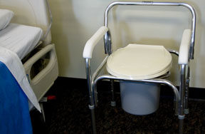
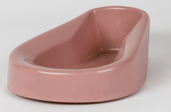
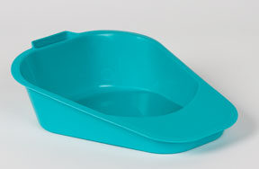
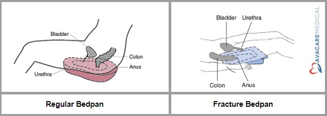
- Place the upper end under the buttocks and the lower end under the upper thighs, with a waterproof pad underneath.
- Can't lift hips: roll to the side, place the pan, roll back. Fracture pan: head of bed at 30°.
- Sit the client up whenever possible; never leave a client lying flat on a regular bedpan.
- Privacy, call light in reach, bed low and locked, measure output, perianal skin care afterward.
Enemas
An enema instills solution into the rectum and sigmoid colon to stimulate peristalsis: to relieve constipation, expel gas, empty the bowel before a test or surgery, give a medication, or start bowel training. It's a clean, not sterile, procedure.
- Warm the solution
- Lubricate the tube
- Slowly insert 7.5–10 cm (3–4 in)
- Raise the bag 30–45 cm (12–18 in) above the anus
- Ask the client to hold it as long as possible
- Cramping or leaking around the tube: lower the bag to slow the flow.
- Resistance: stop, have the client take a deep breath, and run in a little fluid. Never force it.
- Little or no sphincter control: give it with the client on a bedpan.
- Document the results and how the client tolerated it.
| Solution | Key points |
|---|---|
| Tap water (hypotonic) | Water moves into the tissues; risk of water toxicity. Don't repeat. |
| Normal saline (isotonic) | Safest: no fluid or electrolyte shift; volume stimulates peristalsis |
| Hypertonic (sodium phosphate) | Pulls fluid into the colon; small volume for clients who can't tolerate large ones; avoid if dehydrated |
| Soapsuds | Pure castile soap, 5 mL per 1 L; irritates to stimulate peristalsis; caution in older adults and pregnancy |
| Oil retention | Lubricates the rectum and colon |
| Medicated | Held 1–3 hr: neomycin (reduces colon bacteria before surgery), sodium polystyrene sulfonate (high potassium) |
| Carminative | Small volume with additives such as magnesium and glycerin; relieves gas and distention |
| Return-flow (flush) | 100–200 mL in, then lower the container so it flows back; relieves gas |
Large-volume enema for an adult: 750–1,000 mL. Cleansing enemas usually work within 10–15 minutes.
Retention times differ by source and solution: 15–30 minutes in the elimination lesson, 1–3 hours for a medicated enema in the chapter. Follow the order.
Lean left to follow the colon: the sigmoid curves down on the left, so a left side-lying client lets gravity carry the solution in.
Assess first
- Last bowel movement and usual pattern
- Abdomen: bowel sounds, distention, tenderness
- Vital signs, mobility and sphincter control
- Rectal and anal area (hemorrhoids, irritation)
- During the enema: cramping, pain, dizziness or a slowing pulse (vagal response): stop and check the client
Contraindications
- Increased intracranial pressure
- Glaucoma
- Recent rectal, prostate or bowel surgery
- Suspected bowel obstruction or perforation, or sudden abdominal pain of unknown cause (such as appendicitis)
- Sodium phosphate (hypertonic) enemas: kidney impairment or dehydration
Laxatives & stool softeners
| Type | Examples | How it works | Works in |
|---|---|---|---|
| Bulk-forming | Psyllium, methylcellulose, polycarbophil | Absorbs water, adds bulk | 12–72 hr |
| Surfactant (stool softener) | Docusate | Lets water and fat into the stool | 12–72 hr |
| Stimulant | Bisacodyl, senna, castor oil | Stimulates peristalsis | Suppository 15–60 min · oral 6–12 hr |
| Osmotic | Magnesium hydroxide, citrate or sulfate, sodium phosphate, polyethylene glycol, lactulose | Pulls water into the bowel | Oral 24–72 hr · rectal: minutes |
Laxatives work more slowly than enemas. Long-term use weakens the bowel's natural response and causes chronic constipation. They can complicate appendicitis or a bowel obstruction.
Rectal tube or fecal management system: protects the skin of clients with no bowel control, usually in the ICU (intensive care unit). Bowel training: a regular time each day (often after a meal), high fiber and fluids, sometimes laxatives.
Quick check
The client cramps during an enema. What do you do?
Lower the bag to slow the flow.
Which enema solution is safest?
Normal saline (isotonic).
How many enemas for "until clear"?
No more than 3.
Which enema lowers potassium?
A medicated enema with sodium polystyrene sulfonate.
Ostomies & bowel diversions
Colostomies, ileostomies, J-pouch and Kock pouch, and stoma care.
Types of bowel diversions
An ostomy is a surgical opening in the abdominal wall; the stoma is the end of bowel brought to the skin. Ostomies are temporary or permanent, for cancer, inflammatory bowel disease, trauma, obstruction or diverticular disease.
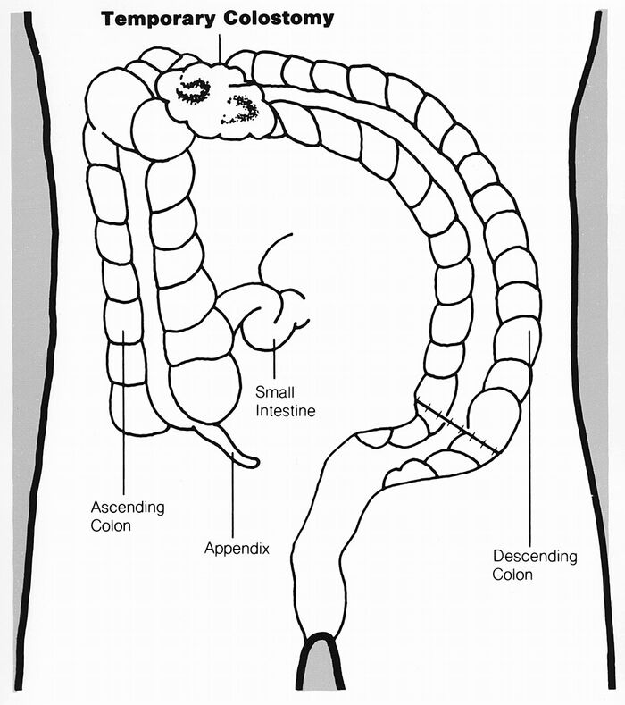
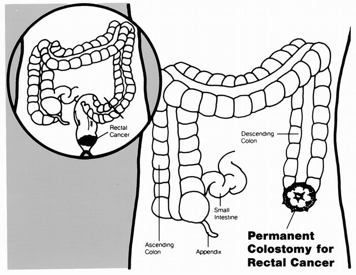
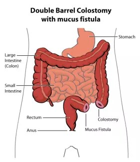
| Diversion | Location | Output | Notes |
|---|---|---|---|
| Ileostomy | Ileum, RLQ | Liquid, dark green, enzymes | Up to 2,000 mL a day at first; dehydration and sodium and potassium loss |
| Ascending colostomy | Right abdomen | Liquid to semi-liquid; very irritating | |
| Transverse colostomy | Mid-abdomen | Pasty | Often a temporary loop for an emergency |
| Descending colostomy | Left upper abdomen | Semi-formed | |
| Sigmoid colostomy | LLQ | Formed | Usual permanent colostomy (rectal cancer) |
| End colostomy | Working end brought to the skin; usually permanent. A temporary version can leave the distal colon closed off (Hartmann's pouch). | ||
| J-pouch | Internal ileal pouch connected to the anus after the colon and rectum are removed; no external stoma, keeps the sphincter. Made in stages with a temporary ileostomy. | ||
| Kock pouch (continent ileostomy) | Internal ileal pouch with a nipple valve; the client drains it with a catheter through the stoma several times a day; no external pouch | ||
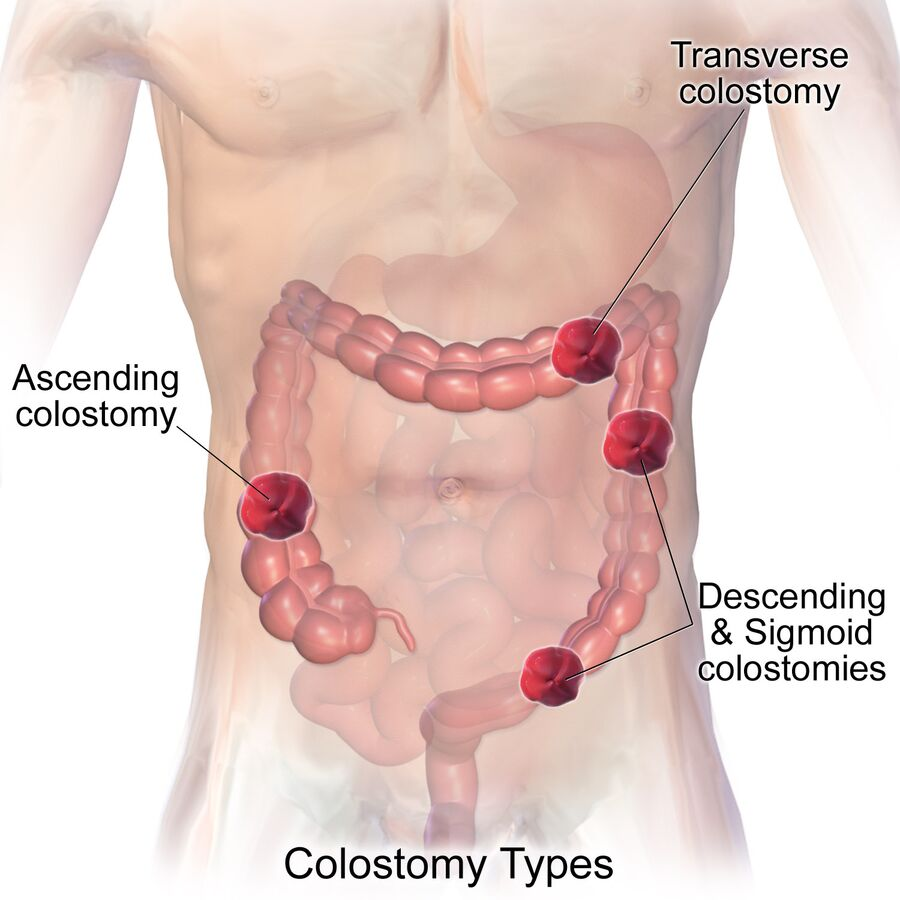
The farther along the colon, the firmer the stool. Ileostomy and ascending: liquid → transverse: pasty → descending: semi-formed → sigmoid: formed.
Assessing the stoma
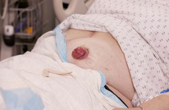
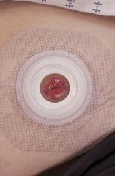
- New stomas are swollen and shrink over the first weeks to months. Measure weekly for the first 8 weeks; cut-to-fit barriers are used for the first 6–8 weeks.
- Report right away: a pale, dark red, dusky, purple, brown or black stoma (blood supply), and no output with cramping and distention (blockage).
- The stoma has few nerve endings, so the client may not feel an injury. Inspect daily.
- Clean peristomal skin with warm water or a mild soap without moisturizers; dry completely. Alcohol, povidone-iodine and oil-based or moisturizing soaps keep the barrier from sticking.
Barrier opening: the chapter says 0.15–0.3 cm (1/16–1/8 in) larger than the stoma; the lesson says no more than about 3 mm (1/8 in) larger; the skills module says 1/8 in. They agree: 1/16–1/8 in (1.5–3 mm) larger, never more than 1/8 in. (The chapter's "1/18" is a typo for 1/16.)
Pouching systems
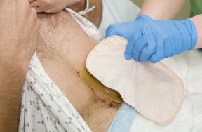
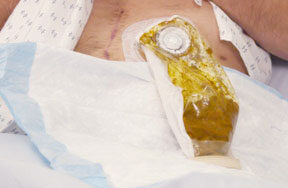
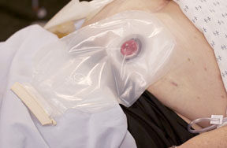
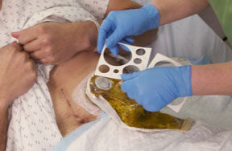
- Hand hygiene, gloves; remove the pouch gently, one corner first, supporting the skin
- Inspect the stoma and skin
- Clean with warm water or mild soap; dry completely
- Measure and trace; cut the barrier 1/16–1/8 in larger
- Paste in creases if needed; apply the barrier and pouch; clamp
- Dispose of the old pouch; remove gloves; hand hygiene
Empty the pouch when it's one-third to one-half full. Colostomy irrigation (warm water through the stoma on a schedule) suits a permanent descending or sigmoid colostomy in a client who had normal bowel habits. Refer fit, leak or skin problems to a WOC (wound, ostomy and continence) nurse.
Peristomal skin problems
| Problem | Looks like | Cause | Treatment |
|---|---|---|---|
| Irritant dermatitis 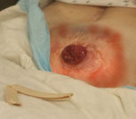 | Red, moist, painful | Stool or urine leaking under the barrier | Clean and dry, barrier powder or wipe, remeasure the stoma |
| Allergic contact dermatitis 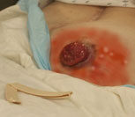 | Red, irritated where the product touches | Tape, soap, barrier, adhesive, powder or pouch material | Change to a different product |
| Yeast infection (candidiasis) 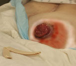 | Itchy, bumpy, red | Leakage, sweat, antibiotics, broken skin | Antifungal powder; keep clean and dry |
Teach clients to call for: more abdominal or incision pain, fever or incision drainage, skin irritation that a well-fitted pouch doesn't fix, trouble getting a seal, a bulge (hernia), a narrowing stoma, separation of the stoma from the skin, cuts in the stoma, or a change in bowel habits.
Living with a colostomy or ileostomy
Colostomy
- Most resume a regular diet
- Odor: asparagus, beans, cabbage, eggs, fish, garlic, onions
- Gas: beer, broccoli, Brussels sprouts, carbonated drinks, dairy, onions, peas
- Loose stool: chocolate, dried beans, fried or spicy foods, raw produce
- Ask the provider before laxatives or enemas; caution with enteric-coated or extended-release pills; charcoal-filter pouches control odor
- Temporary diverting colostomy: the client may still feel a rectal urge or pass rectal mucus
Ileostomy
- Chew well; no high-fiber foods for the first 6–8 weeks (popcorn, nuts, corn, celery, fresh tomatoes, seeds, berries)
- Thicken stool: applesauce, bananas, cheese, pasta, rice
- Watch for dehydration: thirst, dry mouth, less urine, weakness, cramps, dizziness on standing
- Blockage: cramping, nausea, vomiting, swollen stoma, no output 6+ hr → knee-chest position, massage, call the provider
- Check the pouch for undissolved pills
Ileostomy fluids: the skills module gives two numbers, about 80–96 oz (2.4–2.8 L) a day to prevent dehydration and blockage, and at least 1.5 L a day as a floor, with more fluid, potassium and sodium in hot weather or with high output.
Quick check
Which colostomy produces formed stool?
Sigmoid (LLQ).
The stoma is 1 in across. What opening do you cut?
1/16–1/8 in larger: about 1 1/8 in.
The stoma looks dusky purple. What do you do?
Report it to the surgeon right away (poor blood supply).
An ileostomy client has cramping and no output for 6 hours. What does the client do?
Lie in a knee-chest position, massage the abdomen, and call the provider (possible food blockage).
NG decompression & tube feeding
On the bowel slides; most of the detail is already in the Week 8 guide.
NG tube for decompression
- Why: removes gas and stomach contents for a bowel obstruction or ileus, relieving distention, nausea and vomiting and lowering aspiration risk. Decompression and feeding aren't done through the tube at the same time.
- Double-lumen (sump) tube: the blue pigtail is an air vent. Keep it above the stomach and never clamp it while the tube is on suction.
- Before inserting: high-Fowler's, agree on a distress signal, towel and basin, check the nares, water-soluble lubricant. No oral pain medication (suction removes it).
- Measure: tip of the nose → earlobe → xiphoid process.
- Placement: X-ray is the gold standard; gastric pH 5.5 or less supports it; the air "whoosh" test is unreliable.
- Report coffee-ground, dark or blood-streaked drainage right away.
- Delegate: measuring output, comfort and oral care. Insertion and maintenance stay with the nurse.
Nursing care & assessment
- Check placement before every use and every shift; mark and record the tube length at the nares
- Keep the head of the bed at least 30°
- Low intermittent suction as prescribed; check that the tube drains (irrigate with normal saline only if ordered)
- Measure and describe drainage (amount, color); count it as output
- Assess bowel sounds, distention, nausea and passing of flatus
- Watch electrolytes: losing stomach contents drops potassium and sodium and can cause metabolic alkalosis
- Mouth and nares care often; secure the tube without pressure on the nostril
Contraindications to the nasal route
- Facial trauma or a basilar skull fracture (the tube could pass into the brain)
- Recent nasal surgery or a blocked nasal passage
- Esophageal varices, stricture or recent esophageal surgery
Used for clients who can't eat enough or can't swallow safely but have a working GI tract. Care: confirm placement before every feeding and medication; head of the bed 30–45° during feedings and at least 30° for 1 hour after; flush with 30 mL of water after feedings and before and after each medication; change tubing every 24 hours. Assess: residuals (every 4–6 hours for tubes in the stomach), tolerance (distention, nausea, vomiting, diarrhea), signs of aspiration, I&O, weight, labs, and the skin at the nares or insertion site. Full details are in the Week 8 study guide.
Quick check
What does the blue pigtail on a sump tube do, and can you clamp it?
It's an air vent that keeps the tube from sucking onto the stomach lining. Never clamp it while the tube is on suction.
How do you measure an NG tube?
Tip of the nose to the earlobe, then to the xiphoid process.
Which NG drainage do you report right away?
Coffee-ground, dark or blood-streaked drainage.
The urinary tract & normal urine
How urine is made, how much is normal, and what the color tells you.
How urine is made
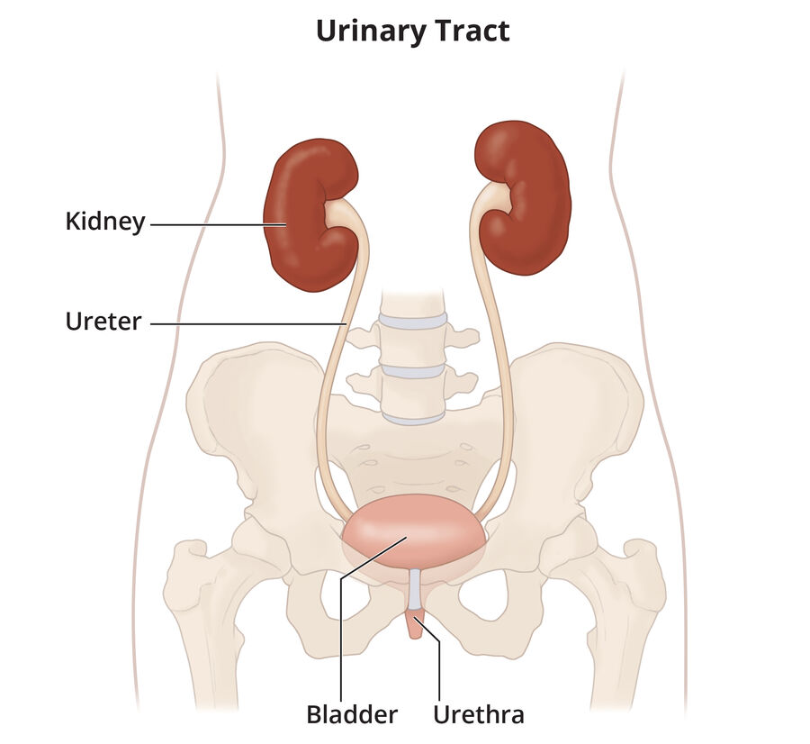
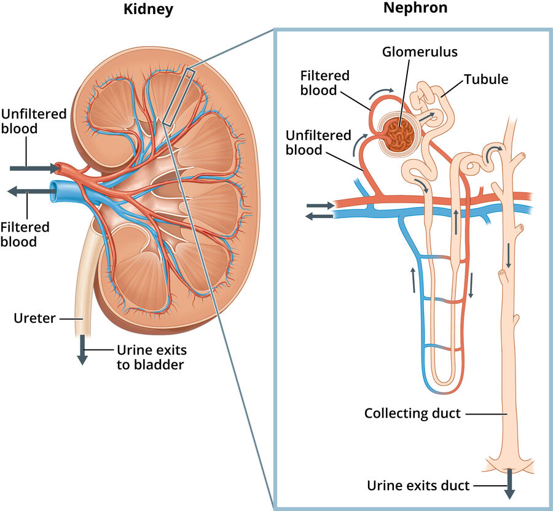
Each kidney has about a million nephrons, the units that make urine.
- Kidneys: two bean-shaped organs below the ribcage beside the spine. They filter waste and toxins, balance fluids and electrolytes, help keep acid-base balance, and make hormones: renin (blood pressure), erythropoietin (red blood cells), and they activate vitamin D.
- Nephrons do the filtering, reabsorbing and excreting.
- Renin → angiotensin I → ACE (angiotensin-converting enzyme) → angiotensin II, which raises blood volume and pressure.
- ADH (antidiuretic hormone) from the posterior pituitary: high ADH = less urine, low ADH = more urine.
- One ureter from each kidney carries urine to the bladder, which stretches as it fills. Stretch receptors signal the brain; the sphincters relax and urine leaves through the urethra.
- Factors that influence urination: age, medical conditions, diet and exercise, medications, fluid intake, muscle tone, psychological factors.
- Bladder volume that triggers the urge to void: 250–450 mL (chapter), 250–400 mL (skills module), 300–400 mL (lesson); the slides say the bladder holds up to about 2 cups.
- Daily adult urine output: 1–2 L (chapter and slides: "1 to 2 quarts") or 1–3 L (skills module).
Measuring output & terms
Urine output less than 30 mL/hr for more than 2 hours must be reported to the provider. I&O (intake and output) is totaled every 24 hours for hospitalized clients.
- Minimum expected output: 0.5 mL/kg/hr, about 30–40 mL/hr for adults.
- Measure in a graduated container: from a bedpan, commode, urinal, a "hat" in the toilet, or the urometer on a catheter bag.
| Client | How to measure urine output |
|---|---|
| Continent | Ask the client to void into a urinal, bedpan, commode or toilet hat (not mixed with toilet paper or stool), then pour it into a graduated container and read it at eye level |
| Incontinent | Weigh the wet brief or pad and subtract its dry weight: 1 g = 1 mL. An external catheter lets you measure directly. |
| Indwelling catheter | Empty the drainage bag into the client's own graduated container at the end of every shift (and before it gets full), keeping the spout off the container; read hourly output from the urometer when ordered |
| Term | Meaning |
|---|---|
| Anuria | Less than 50 mL in 24 hours |
| Oliguria | Less than 400 mL in 24 hours |
| Polyuria | Excessive urine output (diuresis) |
| Dysuria | Painful or difficult urination |
| Frequency / urgency | Voiding more often / a strong desire to void |
| Nocturia | Waking at night to urinate |
| Glycosuria / proteinuria / pyuria | Glucose / protein / pus in the urine |
| Urinary incontinence | Involuntary loss of urine |
What urine color tells you
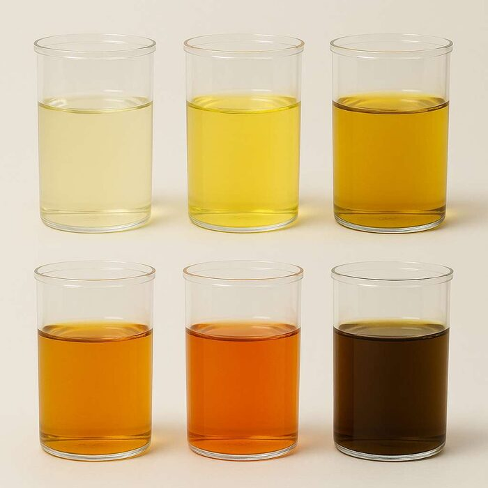
- Light yellow and clear: normal. Dark yellow or amber: concentrated, dehydration. Brown or tea-colored: liver disease, bile pigments or medications. Red: blood, or foods.
- Foods: beets, blackberries, rhubarb (red); food dyes (blue or green); asparagus (green, stronger odor); aloe or fava beans (dark brown).
- Medications: phenazopyridine (orange-red), amitriptyline (green-blue), levodopa (dark), riboflavin (bright yellow).
Risk factors that alter urination
The slides list age, diet, gender, psychological stress (lack of privacy) and medications (diuretics).
| Factor | Effect |
|---|---|
| Older adults | Fewer nephrons, weaker bladder tone (frequency), smaller bladder (nocturia), incomplete emptying (UTIs), chronic illness, less mobility |
| Gender | Females: shorter urethra, more UTIs; childbirth and menopause weaken the pelvic floor (stress incontinence). Males: enlarged prostate (retention, urgency, overflow). |
| Pregnancy | Fetus presses on the bladder; blood volume up 30–50%; relaxin relaxes the sphincter |
| Diet | More sodium = less urine; caffeine and alcohol = more urine |
| Psychological | Stress, anxiety, public toilets, no privacy in the hospital, not enough time to void |
| Surgery | Anesthesia and opioids lower output; lower abdominal surgery can cause swelling that blocks flow |
| Medications | Diuretics increase urine; anticholinergics and antihistamines cause retention; chemotherapy can harm the kidneys |
Thiazide diuretics
- Hydrochlorothiazide
- Chlorthalidone
- Metolazone, indapamide
Loop diuretics
- Furosemide
- Bumetanide
- Torsemide
Potassium-sparing
- Spironolactone
- Triamterene
- Amiloride
Diuretics increase urination by increasing urine production in the kidneys. Take them in the morning.
Quick check
Output has been 20 mL/hr for 3 hours. What do you do?
Report it (less than 30 mL/hr for more than 2 hours).
What's oliguria?
Less than 400 mL of urine in 24 hours.
High ADH: more or less urine?
Less.
Which medication turns urine orange?
Phenazopyridine.
Incontinence & retention
The five types on the slides, plus management.
Types of urinary incontinence
| Type | What happens | Common causes |
|---|---|---|
| Stress | Small leaks with coughing, laughing, sneezing, lifting | Weak pelvic floor after childbirth or menopause; after prostatectomy |
| Urge | Sudden strong need; leaks before reaching the toilet | Overactive detrusor muscle, UTI, overactive bladder |
| Overflow | Frequent dribbling from an overfull bladder | Retention: enlarged prostate, outlet blockage, weak detrusor, spinal cord injury, MS (multiple sclerosis) |
| Reflex | Moderate leaks without warning | Nerve damage: spinal cord injury, stroke, MS |
| Functional | Can't get to or use the toilet in time | Mobility, cognitive or environmental barriers (arthritis, wheelchair) |
| Transient | Temporary and reversible | UTI, temporary confusion, high blood glucose, medications |
| Nocturnal enuresis | Bedwetting | Common in children; in adults: alcohol, evening caffeine, some medications |
Risk factors: female anatomy, many pregnancies and vaginal births, aging, low estrogen, obesity, neurologic disorders, diabetes, dementia, immobility, and medications (diuretics, opioids, anticholinergics, sedatives). Incontinence raises the risk of falls, fractures, pressure injuries and depression.
Managing incontinence
Nursing care
- Toileting schedule; remove barriers
- Fluids during the day, fewer before bed
- Incontinence garments; external catheters
- Avoid indwelling catheters
- Skin care: clean, dry, barrier cream
Client teaching
- Kegels: tighten 10, relax 10, 15 repetitions, 3–4 times a day, lying, sitting and standing
- Empty the bladder fully; keep a diary; stay regular (no constipation)
- Avoid caffeine, alcohol, colas, tea, chocolate
- Bladder compression (Credé, Valsalva, double voiding) for reflex incontinence
Bladder retraining
- For urge incontinence or overactive bladder
- Void on a schedule; lengthen intervals slowly (5–15 min at a time)
- After 3 days without accidents, lengthen again, toward every 4 hours
- Hold until the scheduled time; use distraction and relaxation; keep a log
Habit training
- For clients with limited cognitive ability
- The toileting schedule follows the client's own pattern, timed when they stay dry
Retraining stretches the time; habit training follows the clock the client already keeps.
Urinary retention
Retention: the bladder doesn't empty fully. More common in males (BPH, benign prostatic hyperplasia). Untreated, it leads to UTIs, bladder damage, hydronephrosis, kidney injury and overflow incontinence.
- Signs: trouble starting (hesitancy), weak stream, suprapubic discomfort, distention, frequency, dribbling
- Causes: enlarged prostate, bladder prolapse, outlet obstruction, nerve problems, medications (opioids, anticholinergics, antihistamines)
- Treatment: drain the bladder (catheter), then treat the cause
- Postoperative retention: more common after spinal or epidural anesthesia, long surgery, lots of IV fluid and opioids. Confirm with a bladder scan, catheterize, ambulate early, cut back opioids.
- Bladder scanning (portable ultrasound) shows bladder volume and residual urine and avoids unneeded catheters, lowering CAUTI risk.
- Intermittent catheterization: adjust frequency so each volume is 400 mL or less.
- BPH: age-related prostate growth (DHT, dihydrotestosterone) → frequency, urgency, nocturia, weak stream, retention. After a TURP (transurethral resection of the prostate), incontinence usually resolves in about 3 months.
Quick check
Leaking when sneezing is which type?
Stress incontinence.
Dribbling from an overfull bladder with an enlarged prostate is which type?
Overflow incontinence.
Which program suits a client with dementia?
Habit training.
What do you do before catheterizing for suspected retention?
A bladder scan.
UTIs & other conditions
The five physiological conditions on the slides.
Conditions that alter urinary elimination
| Condition | Key findings | Care |
|---|---|---|
| Dehydration | Fluid loss more than intake: thirst, dry mouth, fatigue, fever, dizziness, dark urine, little or no urine | Oral fluids (ORS, oral rehydration solution, or water) for mild; IV fluids if severe |
| UTI (urinary tract infection) | Burning, urgency, frequency, suprapubic or flank pain, fever, cloudy foul or bloody urine. Older adults: new confusion, incontinence, falls, fatigue, poor appetite. | Urinalysis and culture (before antibiotics), antibiotics, fluids |
| Pyelonephritis | An untreated UTI that reaches the kidney: flank pain, fever, nausea, vomiting, hematuria | Antibiotics; serious complications possible |
| Kidney stones | Sharp flank pain radiating to the groin, hematuria, frequency, nausea; fever means infection | Strain urine, fluids, pain medication; ESWL (extracorporeal shock wave lithotripsy) or removal if too large |
| Kidney failure | eGFR (estimated glomerular filtration rate) under 15 or needing dialysis: low urine output, hypertension, anemia, itching | Hemodialysis or peritoneal dialysis, transplant; medications, diet, activity |
| Prostate enlargement (BPH) | Frequency, urgency, nocturia, weak stream, retention | Monitoring, medications, surgery |
UTI risk factors
- Female (short urethra close to the anus)
- Indwelling catheters
- Sexual activity, menopause
- Retention, stones, diabetes
UTI teaching
- Drink 2,000–3,000 mL a day unless restricted
- Finish all the antibiotics
- Wipe front to back; void after intercourse
- Cotton underwear; no tight pants, bubble baths or perineal powder
Stone risk factors: dehydration, BMI (body mass index) over 30, gout, high urine calcium, hyperparathyroidism, past or family history, recurrent UTIs, diuretics, calcium antacids. CKD (chronic kidney disease) risk factors: diabetes, hypertension, heart disease, family history, obesity, smoking.
Quick check
An older adult is suddenly confused. Which infection do you suspect?
A UTI.
Collect the urine culture before or after the first antibiotic dose?
Before.
What do you teach a client passing a kidney stone?
Strain all urine and drink more fluids.
Urine specimens & tests
Which specimens are sterile, how to collect each one, and the diagnostic tests.
Urine specimen collection
| Specimen | Sterile? | How |
|---|---|---|
| Random urinalysis | No | Clean cup; label and send |
| Clean-catch midstream (culture) | Yes | Cleanse, start voiding in the toilet, catch the middle of the stream in a sterile cup, finish in the toilet; cap without touching the inside |
| Catheter specimen (culture) | Yes | Clamp below the sampling port, scrub it, withdraw with a sterile syringe, unclamp. Never from the bag; never disconnect the system. |
| 24-hour (timed) urine | No | Discard the first void and record the time; collect every void, keep it cold; add the final void within 15 min of the stop time |
- Female clean-catch: wash hands, cleanse the labial folds front to back, then the urethral opening with a second wipe. Male: cleanse the tip of the penis (retract the foreskin if uncircumcised).
- Collect a culture before antibiotics; get it to the lab within about 2 hours or refrigerate it.
- Label in front of the client with two identifiers; note menstruation. Postpone a 24-hour collection during menstruation.
- 24-hour urine: no toilet paper, stool or blood in the container. Missed a void? Restart.
24-hour urine: toss the first, keep the last.
Lab studies & diagnostic tests
- Dipstick (reagent strip): quick bedside check of pH, specific gravity, glucose, ketones, protein, blood, bilirubin, leukocyte esterase and nitrites.
- Urinalysis: needs an order; can show bacteria but not which kind.
- Culture and sensitivity (C&S): grows and identifies the bacteria (24–48 hr) and shows which antibiotics kill them; the gold standard for UTI.
| Test | What it evaluates |
|---|---|
| Uroflowmetry | Urine flow rate and volume |
| Postvoid residual | Urine left in the bladder after voiding (bladder scanner) |
| Cystometric test | Bladder capacity and pressure as it fills |
| Leak point pressure | Bladder pressure when it starts to leak |
| Electromyography | Nerve and muscle impulses of the bladder and sphincters |
| Video urodynamics | Pictures and video of the bladder filling and emptying |
| Cystoscopy | Scope of the urethra and bladder |
| Ureteroscopy | Scope of the ureters and kidneys |
| Pressure flow study | Pressure needed to start urination and the flow rate at that pressure |
| KUB (kidneys, ureters, bladder) | X-ray of their size, shape and position |
| IVP (intravenous pyelogram) | Iodine contrast; a shellfish allergy needs assessment but isn't an automatic stop |
Quick check
Where do you get a urine specimen from an indwelling catheter?
The sampling port, with a sterile syringe after clamping below it. Never from the bag.
What happens to the first void of a 24-hour collection?
It's discarded.
Which test identifies the bacteria?
Urine culture (and sensitivity).
Catheters & CAUTI prevention
Catheter types, care, drainage bags and external catheters.
Types of catheters
| Catheter | Use |
|---|---|
| Straight | One-time drainage, removed right away; no drainage bag |
| Indwelling (Foley) | Short-term continuous drainage; balloon holds it in; closed system |
| Retention (multiple-lumen) | Often postoperative: drainage, bladder irrigation and medication |
| Coudé | Curved tip for clients with an enlarged prostate |
| Suprapubic | Through the abdominal wall; placed surgically by a provider; dressing changed daily |
| Condom (external male) | Sheath over the penis; change at least daily |
| External female | Soft wick between the labia on low continuous suction |
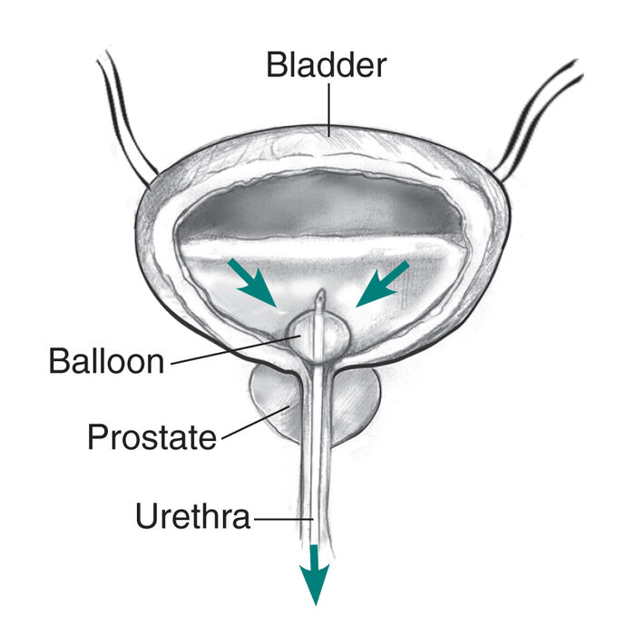
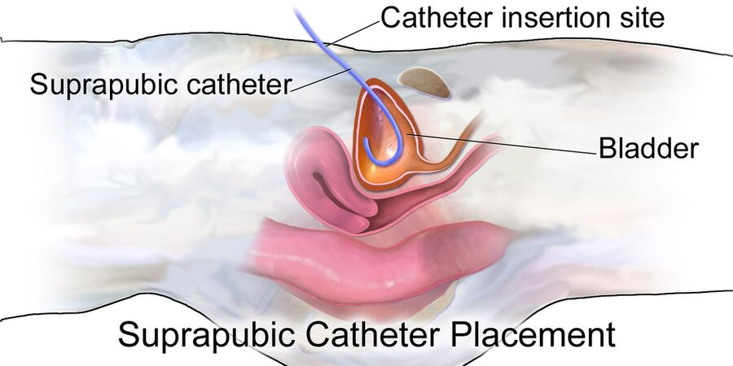
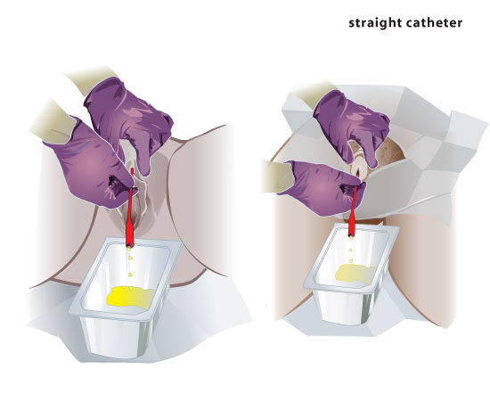
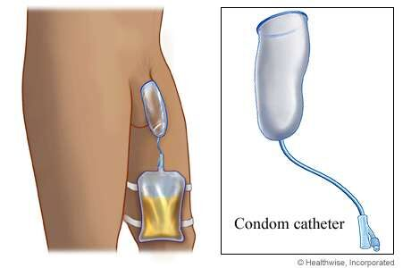
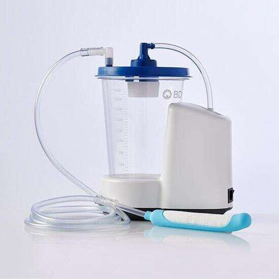
- Catheterization needs a provider's order. Use sterile technique for straight and indwelling catheters; external catheters use clean technique.
- Sizes: females 10–12 Fr, males 12–14 Fr. Latex allergy: silicone or Teflon.
- Inflate the balloon with sterile water.
- Assess allergies, mental status, voiding pattern, vital signs, skin and bladder distention before and after.
Drainage bags
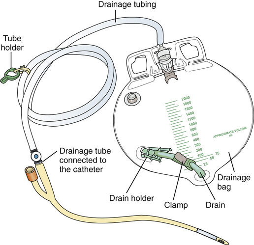
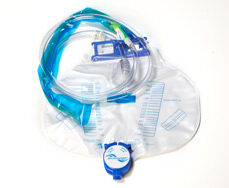
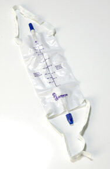
- Keep the bag below the bladder, attached to the bed frame (not the side rail), never on the floor.
- Empty into a graduated container without touching the spout.
- Cover a bag on a wheelchair for dignity.
When to empty: before it's half full (chapter) vs at least every 8 hours (skills module, facility policy). Do both: never let it get half full. Catheter care frequency also varies (daily, every shift, or three times a day and after bowel movements); follow facility policy.
Catheter & perineal care
- Use soap and water, not antiseptics or alcohol. Clean the catheter starting at the meatus and moving away from the body (the first 4 in).
- Female: front to back, a clean part of the washcloth for each stroke. Male: upper thighs, then the meatus and glans down the shaft; replace the foreskin.
- Clean after every bowel movement. Keep a colleague present for confused or combative clients.
- Bladder fullness but little urine: check for kinks and sediment.
- Leaking around the catheter: bladder spasms, blockage (clots, kinks) or a balloon problem.
- Irrigation uses sterile technique; pain during bladder irrigation isn't expected; report it.
CAUTI
CAUTI (catheter-associated urinary tract infection): while a catheter is in place or up to 48 hours after removal.
Risk factors
- Any indwelling catheter
- Longer dwell time
- Opening the closed system
- Routine catheter changes
- Irrigation
Prevention
- Catheter only when truly needed; external options first
- Sterile insertion
- Closed, unkinked system; bag below the bladder
- Hand hygiene; perineal care
- Assess the need every day and remove promptly
Signs: frequency, urgency, flank pain, hematuria, cloudy foul urine, fever. In older adults: new confusion, falls, incontinence, poor appetite.
Bag below the bladder, never on the floor, never half full.
Quick check
What do you use to inflate the balloon?
Sterile water.
Which catheter can't a nurse place?
A suprapubic catheter.
Which catheter for an enlarged prostate?
Coudé.
How long after removal can a CAUTI still develop?
Up to 48 hours.
Urinary diversions
The six diversions on the slides.
Types
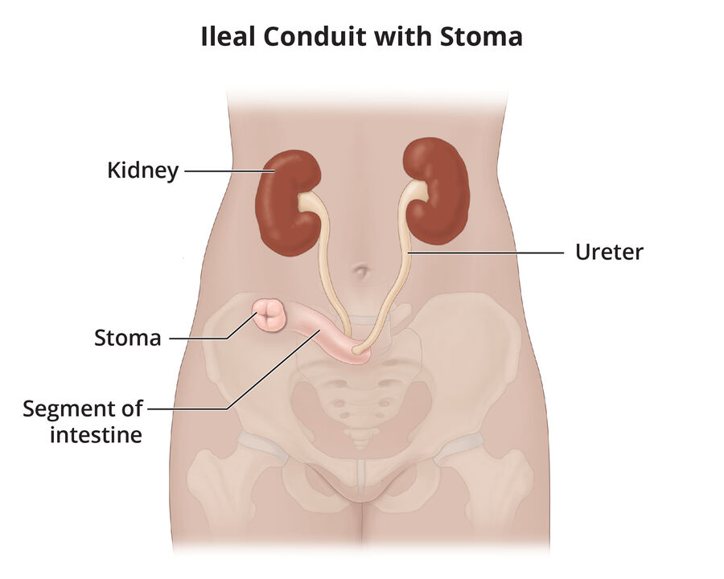
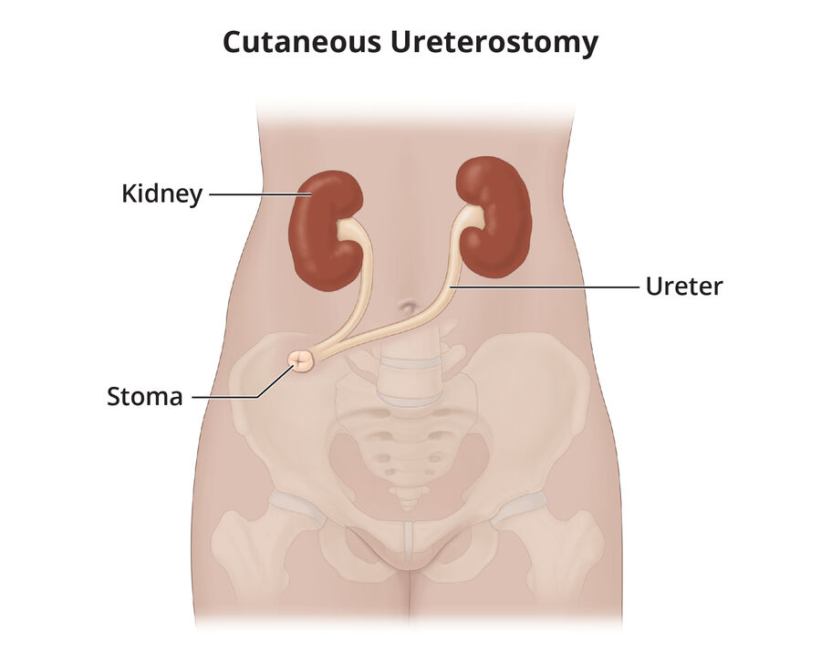
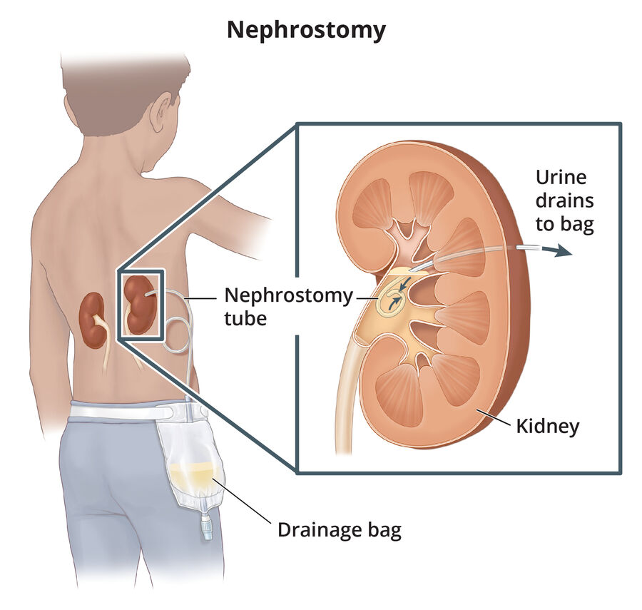
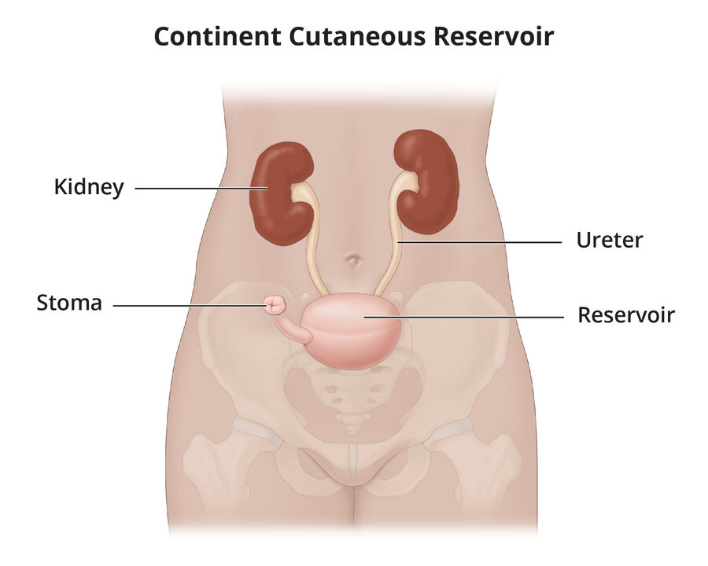
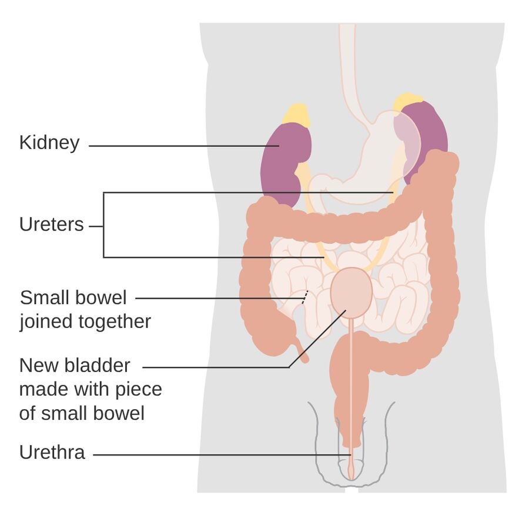
| Diversion | Continent? | Key points |
|---|---|---|
| Urinary catheterization | n/a | The most temporary diversion |
| Ureteral stent | n/a | Keeps a ureter open past a stone, mass, scar or swelling; usually temporary |
| Urostomy: ileal conduit | No | Ureters attached to a piece of ileum brought out as a stoma; urine drains continuously into a pouch. Mucus is expected. The most common diversion. |
| Ureterostomy | No | Ureters brought directly to the skin (transureteroureterostomy joins them so there's one stoma) |
| Nephrostomy | No | Tube from the renal pelvis out the back, often after kidney stone removal; keep the bag below the kidney; flush only if ordered (usually 10 mL or less of saline) |
| Continent reservoir (Kock pouch, Indiana pouch) | Yes | Internal pouch with valves; the client self-catheterizes the stoma; no external bag |
| Neobladder | Yes | New bladder from bowel, attached to the urethra; void by straining the abdominal muscles; sometimes self-catheterize |
| Cystostomy | n/a | Catheter through the abdominal wall into the bladder when urethral catheterization isn't possible |
Kock pouch catheterization schedule: every 2–3 hours at first, then every 5–6 hours once it stretches (chapter) vs about every 4 hours (skills module and lesson). Follow the provider's instructions.
Nursing care
- After urostomy surgery keep output at 30 mL/hr or more (prevents hydronephrosis). Stents may stay 10–21 days.
- Diversions made from bowel can cause electrolyte imbalance and metabolic acidosis.
- When changing a urostomy pouch, wick urine from the stoma with rolled gauze while the skin is prepared.
- Cut the barrier no more than about 1/8 in (3 mm) larger than the stoma; mild soap and water only.
- Drink about 2 L a day (continent reservoirs: flushes mucus; all diversions: prevents infection).
- No diet restrictions after a urostomy, but alcohol, asparagus, beans, cabbage, eggs, fish and onions can cause odor.
- Report: dusky, cyanotic or black stoma; can't pass a catheter or drain a continent pouch; fever, flank pain, cloudy foul urine, confusion.
- Consult a WOC nurse; support body image concerns.
Quick check
Mucus in urine from an ileal conduit: report it?
No, it's expected (the conduit is intestine).
Where is a nephrostomy bag kept?
Below the level of the kidney.
How is a Kock pouch emptied?
The client inserts a catheter through the stoma.
Med math
The five objectives on the Medication Administration slides.
The 24-hour clock
- a.m.: remove the colon and make it 4 digits: 5:30 a.m. → 0530.
- p.m.: add 12 to the hour: 5:30 p.m. → 1730.
- Midnight hour: 12:30 a.m. → 0030; midnight itself is 2400, and one minute after is 0001.
- Noon hour: just remove the colon: 12:10 p.m. → 1210.
- Back to 12-hour: subtract 1200 for afternoon times (1930 → 7:30 p.m.).
| 12-hour | 24-hour |
|---|---|
| 12:15 a.m. | 0015 |
| 2:45 a.m. | 0245 |
| 10:00 a.m. | 1000 |
| 8:00 p.m. | 2000 |
| 10:00 p.m. | 2200 |
| 11:42 p.m. | 2342 |
The slide's examples table has two slips: it lists 10:00 am as 2200 (that's 10:00 p.m.; 10:00 a.m. is 1000) and 11:42 pm as 2142 (that's 9:42 p.m.; 11:42 p.m. is 2342). The table above is corrected.
Metric & household equivalents
Weight
- 1 kg = 1,000 g
- 1 g = 1,000 mg
- 1 mg = 0.001 g
- 1 mcg = 0.001 mg
- 1 kg = 2.2 lb
Volume
- 1 L = 1,000 mL
- 1 mL = 0.001 L
- 1 mL = 1 cc
Length
- 1 m = 100 cm
- 1 cm = 0.01 m
- 1 mm = 0.001 m
- 2.54 cm = 1 in
- Base units: weight in kilograms (doses in mg or mcg), volume in liters (IV fluids in L or mL; liquid doses in mL), length in meters (height in cm).
- Bigger unit → smaller unit: multiply (move the decimal right). 5 mg = 5,000 mcg. Smaller → bigger: divide (move the decimal left). 5,000 mg = 5 g. Each step between g, mg and mcg is 3 decimal places.
- More household equivalents: 2 Tbsp = 1 oz, 1 pint = 480 mL (16 oz), 1 quart = 960 mL (32 oz).
- Pounds and kilograms: lb ÷ 2.2 = kg; kg × 2.2 = lb. The kilogram number is always the smaller one.
- Apothecary units (grains) are no longer used: they caused so many errors that The Joint Commission and ISMP (Institute for Safe Medication Practices) put them on the "Do Not Use" list.
- Teach clients to use a calibrated cup or oral syringe; kitchen spoons vary.
- Insulin, heparin and some vitamins are measured in units (always spelled out); potassium in milliequivalents (mEq).
King Henry Died By Drinking Chocolate Milk: kilo, hecto, deka, base (gram, liter, meter), deci, centi, milli. Each step right is × 10 (move the decimal one place right). Micro is three more steps past milli.
1 · 5 · 15 · 30 · 240: one teaspoon is 5, a tablespoon 15, an ounce 30, a cup 240.
Abbreviations
| Abbreviation | Meaning | Abbreviation | Meaning |
|---|---|---|---|
| AC | Before meals | IM | Intramuscular |
| PC | After meals | IV | Intravenous |
| PRN | As needed | BID | Twice a day |
| STAT | Immediately | TID | Three times a day |
| PO | By mouth | QID | Four times a day |
| SL | Sublingual (under the tongue) | h | Hour |
| ID | Intradermal | gtt | Drop |
The slide writes IM as "intermuscular"; the correct term is intramuscular (into the muscle). USP (U.S. Pharmacopeia) on a label means the drug meets standards for quality, potency and purity.
Rounding rules
- Doses less than 1: round to the nearest hundredth (0.746 → 0.75; 0.743 → 0.74).
- Doses greater than 1: round to the nearest tenth (7.48 → 7.5; 7.43 → 7.4).
- Digit to the right is 5 or more: round up. Less than 5: drop it.
- Always a leading zero (0.5 mg); never a trailing zero (5 mg, not 5.0 mg).
- Facility rules can differ, especially for high-alert drugs.
All rounding is done at the end of the equation. If you convert pounds to kilograms first, carry the unrounded number through and round only the final dose. On nursing school and NCLEX problems, the question tells you where to round.
Three ways to set up a dose
Ratio and proportion
Have ÷ Quantity = Desired ÷ X
Compares two equal ratios, like 325 mg per tablet.
Desired over have
X = (Desired × Quantity) ÷ Have
Desired = the dose ordered; Have = the dose available; Quantity = the form it comes in (1 tablet, 5 mL).
Dimensional analysis
Put what you're solving for on top; everything else cancels.
No formula to memorize: chain the fractions so unwanted units cross out.
The slide's example
174 mg of amoxicillin/clavulanate ordered; available 125 mg/5 mL; round to the nearest whole number.
One more example, all three ways
Phenytoin 0.6 g ordered; available 300-mg capsules. First convert: 0.6 g = 600 mg.
| Method | Setup | Answer |
|---|---|---|
| Ratio and proportion | 300 mg / 1 capsule = 600 mg / X → 300X = 600 | 2 capsules |
| Desired over have | X = 600 mg × 1 capsule ÷ 300 mg | 2 capsules |
| Dimensional analysis | X = (1 capsule / 300 mg) × (1,000 mg / 1 g) × (0.6 g / 1) | 2 capsules |
Habits that prevent errors
- Read the whole problem first: what unit you're solving for, the desired dose, the dose you have, the quantity, and any time factor (such as every 12 hr).
- Write the unit labels (mg, mL, tablets) in every step.
- Pick one method and use it every time.
- Ask whether the answer makes sense; 25 tablets means recheck or have another nurse check.
Dosage by weight
- Convert pounds to kilograms: divide by 2.2 (don't round yet)
- Multiply kilograms by the prescribed mg/kg
- Work out the volume or tablets from what's available
- Round the final answer as directed
Example: 15 mg/kg for a client who weighs 176 lb → 176 ÷ 2.2 = 80 kg → 80 × 15 = 1,200 mg.
The slide's weight-based example uses a child; this site sticks to adult clients, so the example above uses an adult. The steps are the same. The quizzes have a Calculator button on every math question.
Quick check
What is 4:00 p.m. on the 24-hour clock?
1600.
Convert 20 mg to micrograms.
20,000 mcg.
10 mL is how many teaspoons?
2 tsp.
Round 0.746 mL using general rules.
0.75 mL (doses under 1 round to the hundredth).
Magnesium hydroxide 2.4 g ordered; 400 mg/5 mL available. How many mL?
2,400 × 5 ÷ 400 = 30 mL.
Cephalexin 0.5 g ordered; 250 mg capsules. How many capsules?
2.
Digoxin 125 mcg ordered; elixir 0.05 mg/mL. How many mL?
125 mcg = 0.125 mg; 0.125 ÷ 0.05 = 2.5 mL.
How many mL in a pint? In a quart?
480 mL; 960 mL.